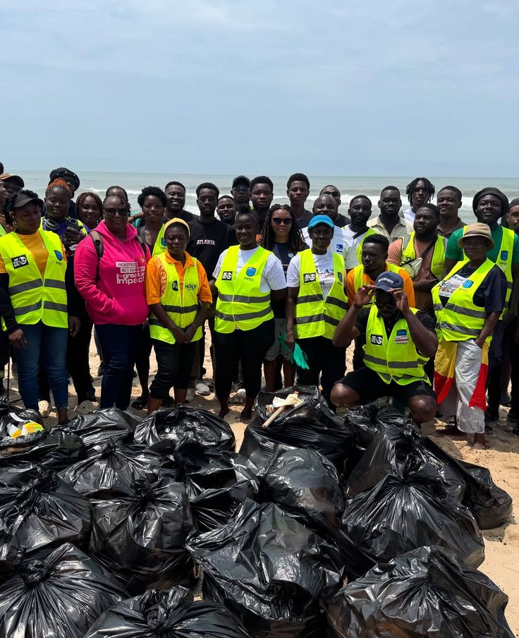
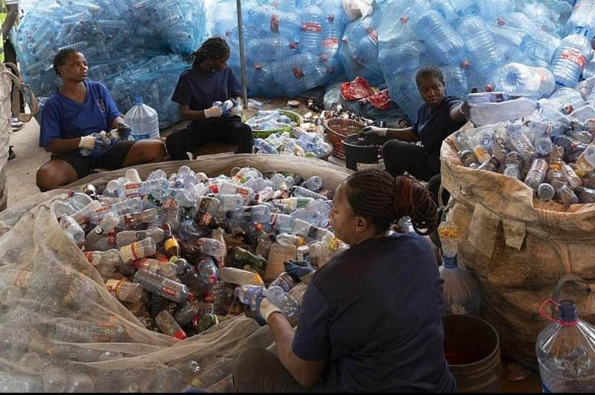
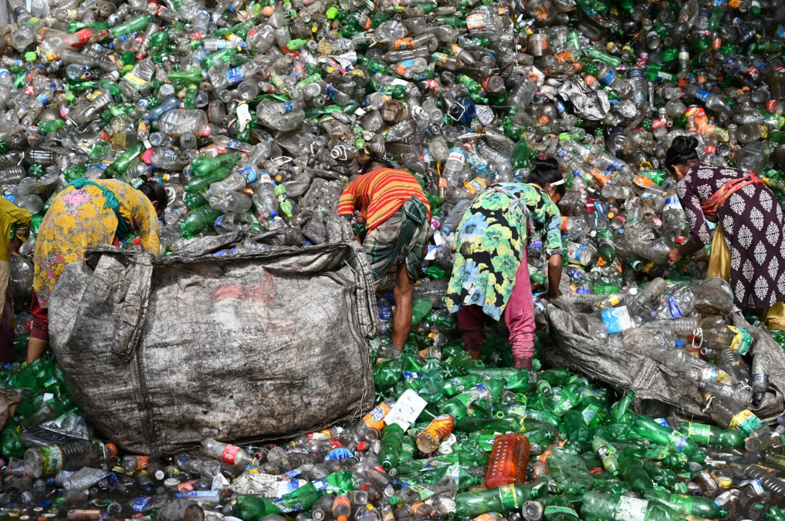
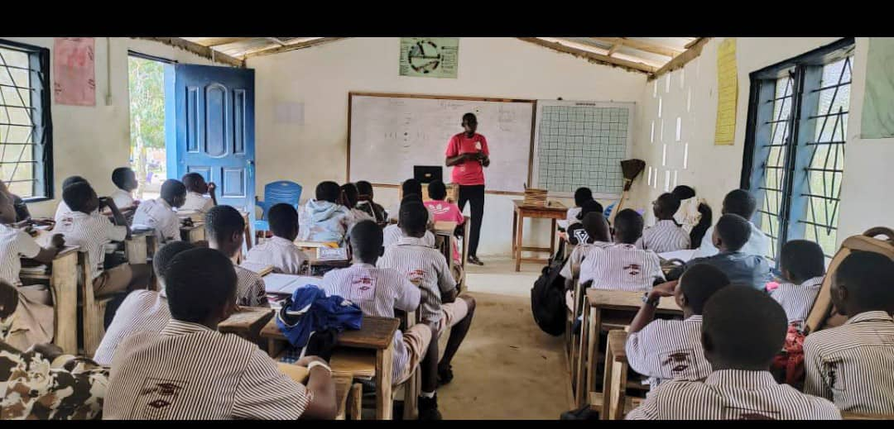
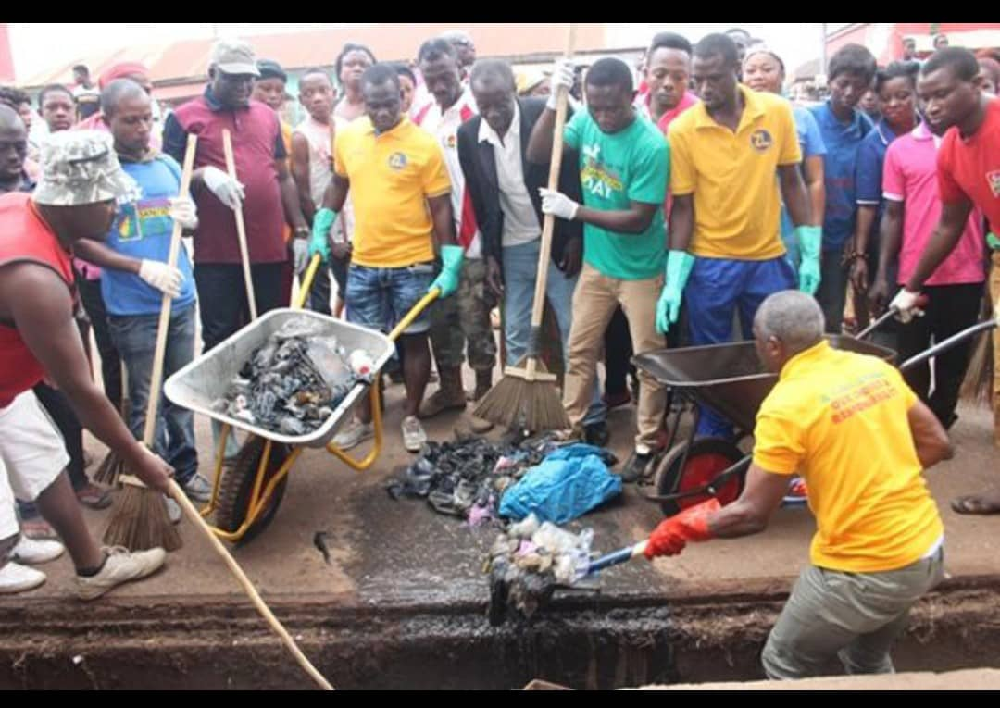
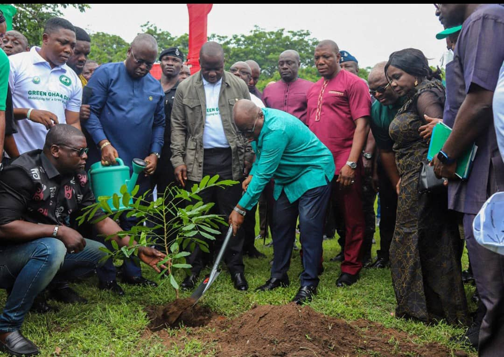

Sekondi Beach Clean-Up Initiative
Monthly volunteer clean-ups along Sekondi Beach, sorting collected plastic for recycling.
Location: Sekondi Beach
Status/Impact: Ongoing — 12,000kg removed

Monthly volunteer clean-ups along Sekondi Beach, sorting collected plastic for recycling.
Location: Sekondi Beach
Status/Impact: Ongoing — 12,000kg removed

Drop-off and sorting centres where households and traders exchange recyclables for small payments.
Location: Market Circle, Anaji, Effiakuma
Status/Impact: 3 hubs active — 1,200 households served

Skills training that turns waste plastic into paving tiles and craft items for sale.
Location: Kwesimintsim
Status/Impact: 85 youth trained

Interactive lessons and waste-sorting stations installed in basic schools.
Location: 12 schools, Sekondi-Takoradi
Status/Impact: 4,000+ students reached

Regular sweeps of market roads and choked drains to prevent flooding and disease.
Location: Twin City-wide
Status/Impact: 40+ clean-ups held

Restoring green cover on reclaimed waste sites in partnership with local government.
Location: Essikado & surrounding areas
Status/Impact: 1,500+ trees planted
| Project | Location | Status / Impact |
|---|---|---|
| Sekondi Beach Clean-Up Initiative | Sekondi Beach | Ongoing — 12,000kg removed |
| Community Recycling Hubs | Market Circle, Anaji, Effiakuma | 3 hubs active — 1,200 households served |
| Plastic-to-Product Workshop | Kwesimintsim | 85 youth trained |
| School Waste Education Programme | 12 schools, Sekondi-Takoradi | 4,000+ students reached |
| Roadside & Drain Clean-Up Drive | Twin City-wide | 40+ clean-ups held |
| Green Takoradi Tree Planting | Essikado & surrounding areas | 1,500+ trees planted |